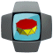
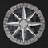
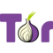
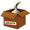

Tor (previously TOR, an acronym for The Onion Router) is a free software for enabling online anonymity. Tor directs Internet traffic through a free, worldwide, volunteer network consisting of more than four thousand relays to conceal a user's location or usage from anyone conducting network surveillance or traffic analysis. Using Tor makes it more difficult to trace Internet activity, including "visits to Web sites, online posts, instant messages, and other communication forms", back to the user and is intended to protect the personal privacy of users, as well as their freedom and ability to conduct confidential business by keeping their internet activities from being monitored.
Proyectos Soportados

AntiPrism
Live USB/memory card OpenELEC-based media server toolbox platform for securing the online presence, web browsing and communications.

JonDo Live CD
CD/USB en vivo basado de Debian con herramientas preconfiguradas para navegación anónima y más.
JonDoFox
Navegación privada con el servicio de anonimato JonDo IP y el perfil JonDoFox para Firefox.

Mozilla Thunderbird
Aplicación multiplataforma de correo electrónico con cifrado a través de la extensión Enigmail.

Onion Browser
Navega la web a través de la red de Tor con este navegador de software libre para iOS.

Orweb
Proxy-capable and Privacy-aware Web Browser for use with Orbot's localhost 8118 proxy, or any HTTP proxy server.


Tor
The Onion Router, en su forma abreviada Tor, es un proyecto cuyo objetivo principal es el desarrollo de una red de comunicaciones distribuid…


Whonix
S.O. amigable para máquinas virtuales, basado en Debian y Tor, enfocado en la anonimidad, privacidad y seguridad.